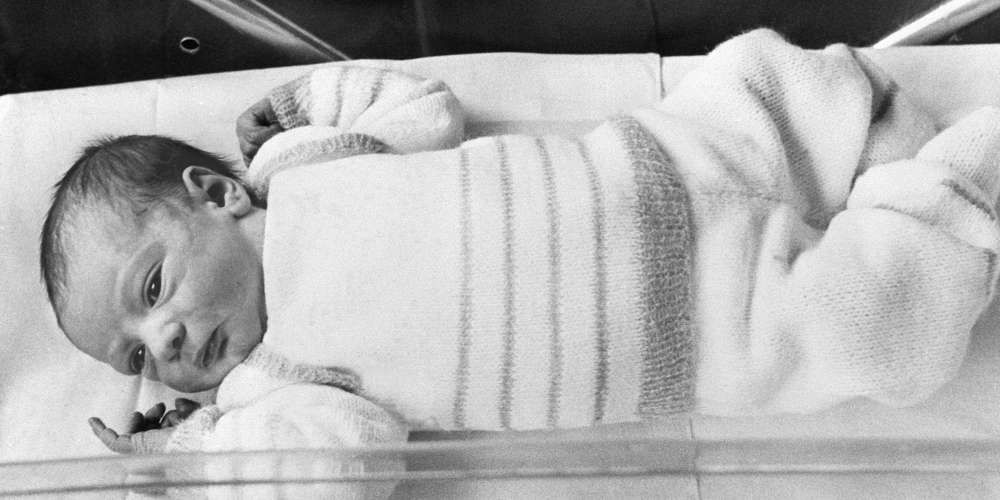

Pacemaker
En 1985 le premier pacemaker implantable est né, permettant de stimuler le coeur en cas en cas de baisse de son rythme. Les modèles dernier cri possèdent des capteurs pouvant réguler le rythme cardiaque en cas d’effort physique. Ils sont volumineux pour les patient, 35cm3 et 1.2cm d’épaisseur, son poids est d’une cinquantaine de gramme. L'espérance de vie après cette opération était légèrement inférieur à 2ans. John Hopps qui en est l’inventeur meurt en 1988.
Hépatite B
L'hépatite B est une maladie du foie provenant de l'ADN. Le début de l'infection de l'Hépatite B a commencé bien avant les années 80. Les principaux symptômes sont d'abord silencieuse allant de 2 à 6 mois. Par la suite, les risques majeurs sont : l'anorexie, des douleurs au foie, des nausées ou vomissements, une fatigue importante. Le virus se transmet soit avec la salive, soit avec des rapports sexuelles avec quelqu'un de contaminer. Ce virus est considéré comme un problème majeur et important selon l'OMS (l'Organisation Mondiale de la Santé), avec 257 millions de personnes seraient atteints d'une infection chronique et 780 000 personnes mortes par an.
SIDA / VIH
Le début de l'épidémie du sida (Syndrome d'Immunodéficience Acquise) a commencé officiellement le 5 juin 1981. Entre 1981 et 2006, il y aurai eu environ 25 millions de morts dût à cette maladie, qui est trammis par plusieurs fluides corporels comme le sang, le lait maternel, sécrétions vaginales ou encore le sperme. A l'heure d'aujourd'hui, il n'existe aucun vaccin contre ce virus, mais il existe des traitements antirétroviraux qui a pour effet de retarder l'appararition du sida; celà réduit la mortalité et la morbidité.
Le VIH (Virus de l'Immunodéficience Humaine) ne veut pas dire SIDA. Le VIH signifie une fragilisation du système immunitaire de l'organisme. Il est donc plus vulnérables aux infections mais sans pour autant dire infecté. Néanmoins, un petit virus qui serai pour la plupart des gens, facile à éliminer avec le système immunitaire, cette personne infectée pourra avoir une maladie beaucoup plus grave et importante.
Il faut aussi faire donc la différence médicale entre les deux. Le sida reste une maladie mortelle mais le VIH peut-être "soigné", du moins il peut permettre aux infectés de passer une vie quasi-normal grâce aux antirétroviraux; cela permet de bloquer certaines étapes du cycle de la multiplication du VIH.
Bébé éprouvette

Le bébé éprouvette nommé «Amandine» et né le 24 février 1982 ouvre une nouvelle page à propos de la stérilité. Celui-ci est la première naissance réaliser par fécondation in vitro en France. Ce principe est utilisé en cas d’obstruction des trompes. Il consiste à récupérer l’ovule et les spermatozoïdes pour ensuite mettre les deux en contact in vitro. Plusieurs dizaine d’heures ensuite il est replacé dans l’utérus de la futur mère.

 Haut de page
Haut de page